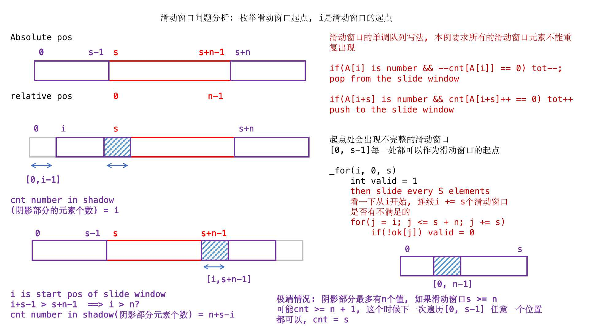
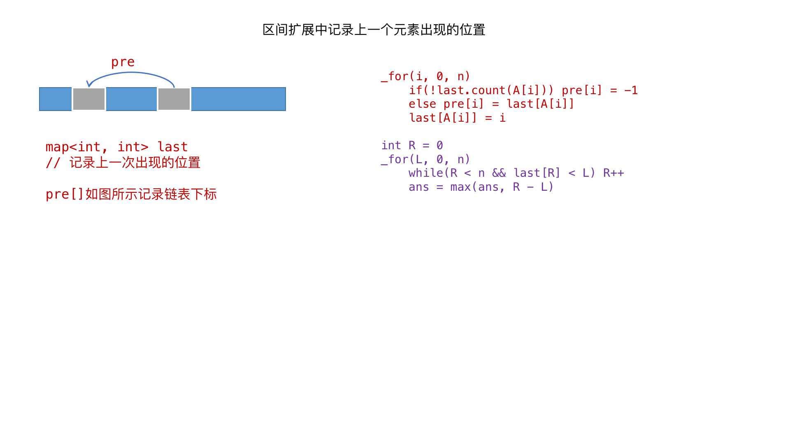
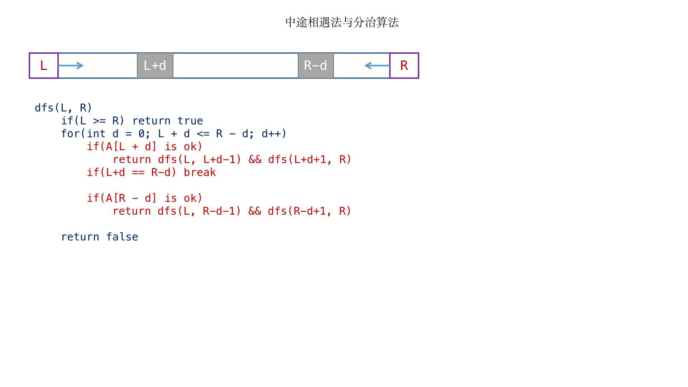
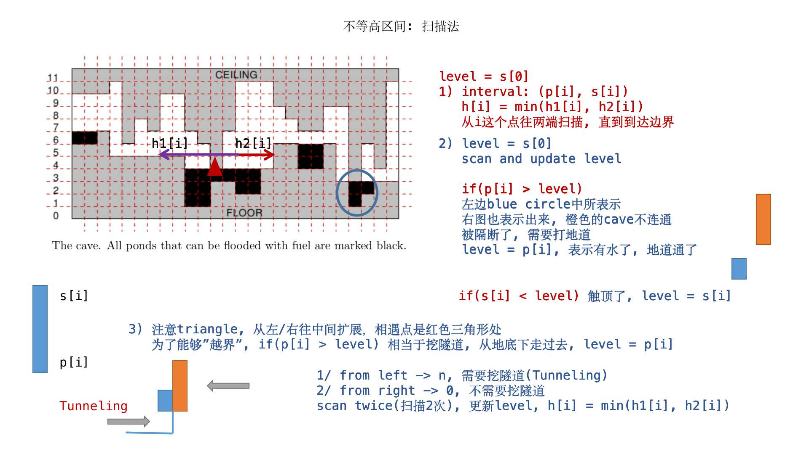
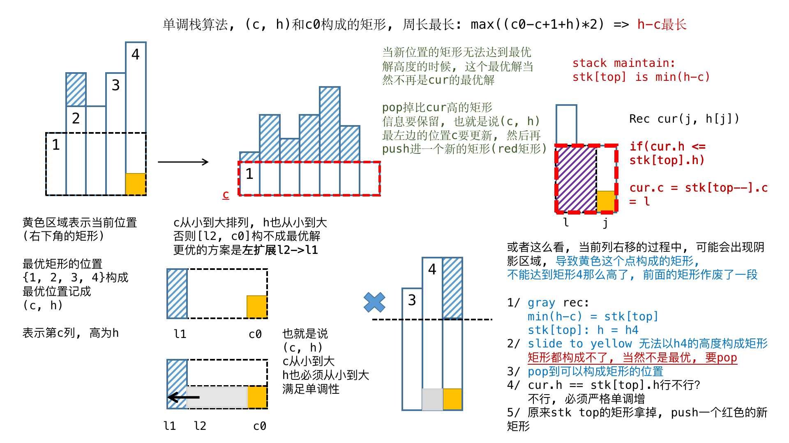

这里主要阐述一下贪心算法的实践高效算法设计(二)
复习一下, 优先队列从小到大输出
1 priority_queue<int, vector<int>, greater<int> > que;
"最大值尽量小"优化 POJ1505
1 2 3 4 5 6 7 8 9 10 11 12 13 14 15 16 17 18 19 20 21 22 23 24 25 26 27 28 29 30 31 32 33 34 35 36 37 38 39 40 41 42 43 44 45 46 47 48 49 50 51 52 53 54 55 56 57 58 59 60 61 62 63 64 65 66 67 68 69 70 const int maxn = 500 + 10; int A[maxn], m, k; int last[maxn]; llong tot = 0; int maxv = -1; void init Set(A, 0); Set(last, 0); tot = 0; maxv = -1; } int solve(llong x) { llong ans = 0; // do not exceed x int cnt = 1; _for(i, 0, m) { if (ans + A[i] <= x) ans += A[i]; else { ans = A[i]; cnt++; } } return cnt; } void print (llong x) { // do not exceed x llong ans = 0; int remain = k; _forDown(i, m - 1, 0) { if (ans + A[i] > x || i + 1 < remain) { last[i] = 1; remain--; ans = A[i]; } else ans += A[i]; } _for(i, 0, m-1) { printf ("%d " , A[i]); if (last[i]) printf ("/ " ); } printf ("%d\n" , A[m - 1]); } int main freopen("input.txt" , "r" , stdin); int kase; scanf("%d" , &kase); while (kase--) { init(); scanf("%d%d" , &m, &k); _for(i, 0, m) { scanf("%d" , &A[i]); tot += A[i]; maxv = max(maxv, A[i]); } // then we finished input // binary search llong L = maxv, R = tot; while (L < R) { llong mid = L + (R - L) / 2; if (solve(mid) <= k) R = mid; else L = mid + 1; } print (L); } }
找规律的题(无聊水题) UVA12627
这个题目略显无聊
1 2 3 4 5 6 7 8 9 10 11 12 13 14 15 16 17 18 19 20 21 22 llong tot(int k) { return k == 0 ? 1 : 3 * tot(k - 1); } llong f(int k, int i) { if (i == 0) return 0; if (k == 0) return 1; int exp = (1 << (k - 1)); if (i < exp) return 2 * f(k - 1, i); else return 2 * tot(k - 1) + f(k - 1, i - exp); } int main freopen("input.txt" , "r" , stdin); int T, k, a, b; scanf("%d" , &T); _rep(kase, 1, T) { cin >> k >> a >> b; cout << "Case " << kase << ": " << f(k, b) - f(k, a - 1) << "\n"; } }
模拟+贪心水题 UVA11093
枚举思路 [ i , p ] [i, p] [ i , p ] p + 1 p+1 p + 1 [ i , i + 1 , . . . , p ] [i, i+1, ..., p] [ i , i + 1 , . . . , p ] p + 1 p+1 p + 1 k ∈ [ i , i + 1 , ⋯ , p ] k \in [i, i+1, \cdots, p] k ∈ [ i , i + 1 , ⋯ , p ] 在k k k ≥ 0 \geq 0 ≥ 0 k k k = 0 =0 = 0 大于0 0 0 0 0 0
1 2 3 4 5 6 7 8 9 10 11 12 13 14 15 16 17 18 19 20 21 22 23 24 25 26 27 28 29 30 31 32 33 34 35 36 37 38 39 40 41 42 43 44 45 46 47 48 49 50 51 const int maxn = 100001 + 10; int p[maxn], q[maxn]; int n; void init Set(p, 0); Set(q, 0); } int go(int s) { int oil = p[s] - q[s]; for (int i = (s + 1) % n; i != s; i = (i + 1) % n) { if (oil < 0) return i; // i is the point cannot reached oil += (p[i] - q[i]); } // s-1 to s, oil < 0, cannot reached s again // oil >= 0, means s-1 to s, can go if (oil < 0) return -1; return s; } int solve int from = 0; for ( ; ;) { int to = go(from); if (to < from) return -1; if (to == from) return from; from = to; } } int main freopen("input.txt" , "r" , stdin); int T; scanf("%d" , &T); _rep(kase, 1, T) { init(); scanf("%d" , &n); _for(i, 0, n) scanf("%d" , &p[i]); _for(i, 0, n) scanf("%d" , &q[i]); // input finished, then solve the problem int ans = solve(); printf ("Case %d: " , kase); if (ans < 0) printf ("Not possible\n" ); else printf ("Possible from station %d\n" , ans + 1); } }
位运算和贪心枚举 LA2440
1 2 3 4 5 6 7 8 9 10 11 12 13 14 15 16 17 18 19 20 21 22 23 24 25 26 27 28 29 30 31 32 33 34 35 36 37 38 39 40 41 42 43 44 45 46 47 48 49 50 51 52 53 54 55 56 57 58 59 60 61 62 63 64 65 66 67 68 69 70 71 72 const int maxm = 200000 + 10; const int maxn = 100000 + 10; int n, m; class Gate { public: int a, b, o; void clear a = b = o = 0; } }; Gate gates[maxm]; void init _for(i, 0, maxm) gates[i].clear(); } // k 0s: 00...011...1 // as data flows to gates[1...m] int output(int k) { _rep(i, 1, m) { int a = gates[i].a; int b = gates[i].b; int va = a < 0 ? (-a) > k : gates[a].o; int vb = b < 0 ? (-b) > k : gates[b].o; gates[i].o = !(va & vb); } return gates[m].o; } int solve(int vn) { // vn are all 0 int L = 1, R = n; while (L < R) { int M = L + (R - L) / 2; if (output(M) == vn) R = M; else L = M + 1; } return L; } int main freopen("input.txt" , "r" , stdin); int T; scanf("%d" , &T); while (T--) { init(); scanf("%d%d" , &n, &m); _rep(i, 1, m) scanf("%d%d" , &gates[i].a, &gates[i].b); // input finished // solve gates A = 0 int v0 = output(0); // all 1 int vn = output(n); // all zero if (v0 == vn) { _rep(i, 1, n) printf ("0" ); } else { // int x = solve(vn); _for(i, 1, x) printf ("0" ); printf ("x" ); _rep(i, x + 1, n) printf ("1" ); } printf ("\n" ); } }
滑动窗口 滑动窗口问题在“连续的s个元素”问题中应用非常广泛 尽量保证滑动窗口的大小不变, 然后维护一个map<int, int> win和只出现一次的数的个数
LA4294

1 2 3 4 5 6 7 8 9 10 11 12 13 14 15 16 17 18 19 20 21 22 23 24 25 26 27 28 29 30 31 32 33 34 35 36 37 38 39 40 41 42 43 44 45 46 47 48 49 50 51 52 53 54 55 56 57 58 59 60 61 62 63 64 65 66 67 68 69 70 71 72 73 74 75 76 const int maxn = 100000 + 10; int A[maxn * 3], ok[maxn * 3]; map<int, int> win; typedef map<int, int>::iterator mii; int n, s; void init Set(A, -1); Set(ok, 0); win.clear(); } // i is the index of A[i] bool ins(int i, map<int, int>& win) { int first = 0; if (!win.count(A[i])) first = true ; win[A[i]] = win[A[i]] + 1; return first; } bool del(int i, map<int, int>& win) { if (!win.count(A[i])) return false ; win[A[i]] = win[A[i]] - 1; if (win[A[i]] < 1) { win.erase(A[i]); return true ; } else return false ; } void slide win.clear(); int cnt = 0; _for(i, 0, s + n + 1) { if (cnt == s) ok[i] = true ; if (i < s && cnt == i) ok[i] = true ; if (i + s > s + n && cnt == s + n - i) ok[i] = true ; if (i == s + n) break ; if (A[i] != -1 && del(i, win)) cnt--; if (A[i + s] != -1 && ins(i + s, win)) cnt++; } } int main freopen("input.txt" , "r" , stdin); int T; cin >> T; while (T--) { init(); cin >> s >> n; _for(i, 0, n) cin >> A[s + i]; // then solve the problem slide(); int ans = 0; _for(i, 0, s) { bool valid = 1; for (int j = i + 1; j < s + n + 1; j += s) if (!ok[j]) valid = false ; if (valid) ans++; } if (ans >= n + 1) ans = s; printf ("%d\n" , ans); } }
区间扩展并且记录上一个元素的位置 HDU2756

1 2 3 4 5 6 7 8 9 10 11 12 13 14 15 16 17 18 19 20 21 22 23 24 25 26 27 28 29 30 31 32 33 34 35 36 37 const int maxn = 1000000 + 10; int A[maxn]; map<int, int> last; int pre[maxn]; int n; void init Set(A, 0); Set(pre, 0); last.clear(); } int main freopen("input.txt" , "r" , stdin); int T; while (scanf("%d" , &T) != EOF) { while (T--) { init(); scanf("%d" , &n); _for(i, 0, n) { scanf("%d" , &A[i]); if (!last.count(A[i])) pre[i] = -1; else pre[i] = last[A[i]]; last[A[i]] = i; } int R = 0, ans = 0; _for(L, 0, n) { while (R < n && pre[R] < L) R++; ans = max(ans, R - L); } printf ("%d\n" , ans); } } }
中途相遇法与分治思想 LA6258

1 2 3 4 5 6 7 8 9 10 11 12 13 14 15 16 17 18 19 20 21 22 23 24 25 26 27 28 29 30 31 32 33 34 35 36 37 38 39 40 41 42 43 44 45 46 47 48 49 50 51 52 53 54 55 56 57 const int maxn = 200000 + 5; int pre[maxn], nxt[maxn], A[maxn]; map<int, int> cur; int n; void initCur cur.clear(); } void init Set(pre, 0); Set(nxt, 0); Set(A, 0); } inline bool uniq(int p, int L, int R) { return pre[p] < L && nxt[p] > R; } bool check(int L, int R) { if (L >= R) return true ; for (int d = 0; L + d <= R - d; d++) { if (uniq(L + d, L, R)) return check(L, L + d - 1) && check(L + d + 1, R); if (L + d == R - d) break ; if (uniq(R - d, L, R)) return check(L, R - d - 1) && check(R - d + 1, R); } return false ; } int main freopen("input.txt" , "r" , stdin); int T; scanf("%d" , &T); while (T--) { // init(); initCur(); scanf("%d" , &n); _for(i, 0, n) { scanf("%d" , &A[i]); if (!cur.count(A[i])) pre[i] = -1; else pre[i] = cur[A[i]]; cur[A[i]] = i; } initCur(); _forDown(i, n - 1, 0) { if (!cur.count(A[i])) nxt[i] = n; else nxt[i] = cur[A[i]]; cur[A[i]] = i; } if (check(0, n - 1)) printf ("non-boring\n" ); else printf ("boring\n" ); } }
贪心和博弈 LA6271
1 2 3 4 5 6 7 8 9 10 11 12 13 14 15 16 17 18 19 20 21 22 23 24 25 26 27 28 29 30 31 32 33 34 35 36 37 38 39 40 41 42 43 44 45 46 47 48 49 50 51 52 53 54 55 56 57 58 59 60 61 62 63 64 65 66 67 68 69 70 71 72 const int maxn = 1024 + 5; char G[maxn][maxn]; int n; // vector<int> win, gray point; vector<int> lose, black point void solve vector<int> win, lose; _rep(i, 2, n) { if (G[1][i] == '1' ) win.push_back(i); else lose.push_back(i); } int rnd = n; while (rnd > 1) { vector<int> win2, lose2, last; // phase 1 _for(i, 0, lose.size()) { int _lose = lose[i]; bool matched = false ; _for(j, 0, win.size()) { int& _win = win[j]; if (_win > 0 && G[_win][_lose] == '1' ) { printf ("%d %d\n" , _win, _lose); win2.push_back(_win); _win = 0; matched = true ; break ; } } if (!matched) last.push_back(_lose); } // phase 2 bool first = true ; _for(i, 0, win.size()) { int _win = win[i]; if (_win > 0) { if (first) { printf ("1 %d\n" , _win); first = false ; } else last.push_back(_win); } } // phase 3 for (int i = 0; i < last.size(); i += 2) { printf ("%d %d\n" , last[i], last[i + 1]); int keep = last[i]; if (G[last[i + 1]][keep] == '1' ) keep = last[i + 1]; if (G[1][keep] == '1' ) win2.push_back(keep); else lose2.push_back(keep); } win = win2; lose = lose2; rnd >>= 1; } } int main freopen("input.txt" , "r" , stdin); while (scanf("%d" , &n) == 1) { _rep(i, 1, n) scanf("%s" , G[i] + 1); // input finished solve(); } }
扫描法水题 LA4621

1 2 3 4 5 6 7 8 9 10 11 12 13 14 15 16 17 18 19 20 21 22 23 24 25 26 27 28 29 30 31 32 const int maxn = 1000000 + 10; int n, p[maxn], s[maxn], h[maxn]; int main freopen("input.txt" , "r" , stdin); int kase; scanf("%d" , &kase); while (kase--) { scanf("%d" , &n); _for(i, 0, n) scanf("%d" , &p[i]); _for(i, 0, n) scanf("%d" , &s[i]); int ans = 0; int level = s[0]; _for(i, 0, n) { if (level < p[i]) level = p[i]; if (level > s[i]) level = s[i]; h[i] = level; } level = s[n - 1]; _forDown(i, n - 1, 0) { if (level < p[i]) level = p[i]; if (level > s[i]) level = s[i]; ans += min(level, h[i]) - p[i]; } printf ("%d\n" , ans); } }
单调栈和状态组织 LA4950

1 2 3 4 5 6 7 8 9 10 11 12 13 14 15 16 17 18 19 20 21 22 23 24 25 26 27 28 29 30 31 32 33 34 35 36 37 38 39 40 41 42 43 44 45 46 47 48 49 50 51 52 53 54 const int maxn = 1000 + 10; char grid[maxn][maxn]; int height[maxn], ans[maxn * 2]; int n, m; class Rec { public: int c, h; Rec(int _c = 0, int _h = 0) : c(_c), h(_h) {} }; Rec stk[maxn]; void init Set(height, 0); Set(ans, 0); } int main freopen("input.txt" , "r" , stdin); int kase; scanf("%d" , &kase); while (kase--) { init(); scanf("%d%d" , &n, &m); _for(i, 0, n) scanf("%s" , grid[i]); _for(i, 0, n) { int top = -1; _for(j, 0, m) { if (grid[i][j] == '#' ) { top = -1; height[j] = 0; } else { // land can be sold height[j]++; Rec cur(j, height[j]); if (top < 0) stk[++top] = cur; else { while (top >= 0 && stk[top].h >= cur.h) cur.c = stk[top--].c; if (top < 0 || stk[top].h - stk[top].c < cur.h - cur.c) stk[++top] = cur; } ans[j - stk[top].c + stk[top].h + 1]++; } } } _rep(i, 1, n + m) if (ans[i]) printf ("%d x %d\n" , ans[i], i * 2); } }
 微信
微信 支付宝
支付宝